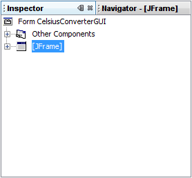
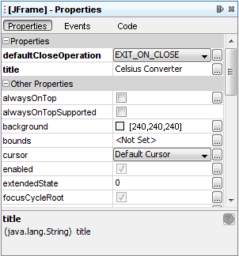
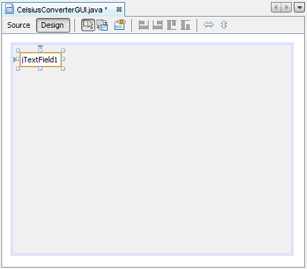
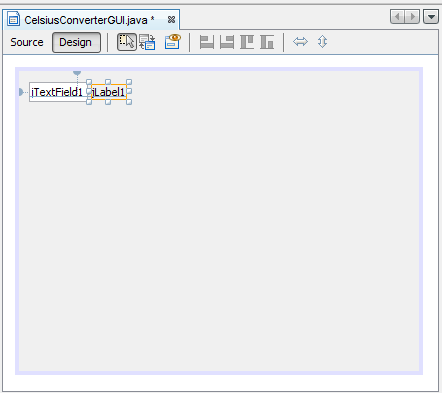
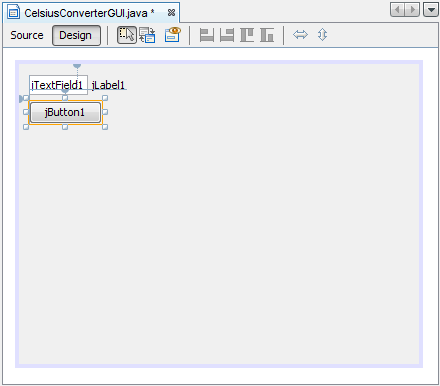
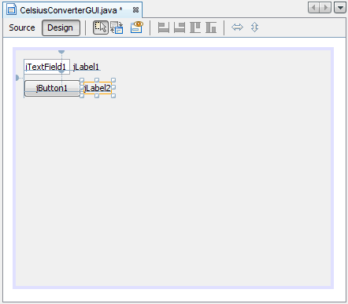

Lección: Aprendiendo Swing con el EID NetBeans
Creando la IGU de CelsiusConverter
Esta sección explica cómo usar el EID NetBenas para crear la IGU de la aplicación. Mientras usted arrastra cada componente desde la Paleta al Área de Diseño, el EID auto-genera el código fuente apropiado.
Paso 1: Establezca el Título
Primero, establezca el título de la aplicación en el JFrame a "Celsius Converter",
haciendo un sólo click en el JFrame en el Inspector:

Seleccionando el JFrame
Entonces, establezca su título con el Editor de Propiedades:

Estableciendo el Título
Puede establecer el título o haciendo doble click sobre la propiedad Título e introducir el nuevo texto
directamente, o pulsando el botón
 e introducir el título en el
campo ofrecido. O, como un atajo, podría hacer un único click en el
e introducir el título en el
campo ofrecido. O, como un atajo, podría hacer un único click en el JFrame del inspector e
introducir su nuevo texto directamente sin usar el editor de propiedades.
Paso 2: Añada un JTextField
A continuación, arrastre un JTextField desde la Paleta a la esquina superior izquierda del Área de
Diseño. Mientras se aproxima a la esquina superior izquierda, el constructor de IGU le ofrece señales visuales
(líneas punteadas) que le sugieren el espaciado apropiado. Usando estas señaes como una guía, suelte un
JTextField en la esquina superior izquierda de la ventana como es mostrado abajo:

Añadiendo un JTextField
Puede verse tentado a borrar el texto por defecto del "JTextField1", pero déjelo en su lugar por ahora. Lo reemplazaremos más tarde en esta lección mientras hacemos los ajustes finales a cada componente. Para más información sobre este componente, vea Cómo Usar Campos de Texto.
Paso 3: Añada una JLabel
A continuación, arrastre una JLabel dentro del Área de Diseño. Colóquela a la derecha del
JTextField, de nuevo observe las señales visuales que le sugieren una cantidad apropiada de
espaciado. Asegúrese de que la base del texto para este componente está alineada con la del
JTextField. Las señales visuales ofrecidas por el EID harán que esto se determine fácilmente.

Añadiendo una JLabel
Para más información sobre este componente, vea Cómo Usar Etiquetas.
Paso 4: Añada un JButton
A continuación, arrastre un JButton desde la Paleta y posiciónelo a la izquierda y debajo del
JTextField. De nuevo, las señales visuales le ayudarán a guiarlo a su lugar.

Añadiendo un JButton
Puede verse tentado a ajustar manualmente la anchura del JButton y del JTextField,
pero déjelos como están por ahora. Aprenderá como ajustar correctamente estos componentes más tarde en esta
lección. Para más información sobre este componente, vea
Cómo Usar Botones, Casillas de
Verificación y Botones de Radio.
Paso 5: Añada una Segunda JLabel

Añadiendo una Segunda JLabel
Finalmente, añada una segunda JLabel, repitiendo el proceso del paso 2. Coloque esta segunda
etiqueta a la derecha del JButton, como se muestra arriba.